首页 > 编程笔记
PCB介绍（超级详细）
PCB（Printed Circuit Board），中文名称为印制电路板，美国称 PWB（Printed Wire Board，印制线路板）。
PCB 是重要的电子部件，既是电子元器件的支撑体，也是电子元器件线路连接的提供者。它用影像转移的方式将线路转移到基板上，经过化学蚀刻后生成线路。
由于 PCB 是采用电子印刷技术制作的，故被称为印制电路板。几乎每种电子设备，小到耳机、电池、计算器，大到计算机、通信设备、飞机、卫星，只要用到集成电路等电子元器件，为了它们之间的电气互连，都要使用 PCB。
PCB 与 PCBA 如图 1 所示，图 1a) 为未贴装元器件的 PCB，图 1b) 为 PCBA（Printed Circuit Board Assembly），也就是装配了电子元器件（如芯片、连接器、电阻器、电容器、电感器等）的 PCB。
1936 年，奥地利人保罗·爱斯勒（Paul Eisler）（减成法的鼻祖）首先在收音机里采用了印制电路板。
1943 年，美国人将该技术运用于军用收音机。1948 年，美国正式认可此发明可用于商业用途。
自 20 世纪 50 年代中期起，印制电路板才开始被广泛运用，如今印制电路板在电子工业中已占据绝对统治地位。
印制电路板从单层发展到双面、多层和挠性，并且仍旧保持着各自的发展趋势。由于不断地向高精度、高密度和高可靠性方向发展，不断缩小体积、降低成本、提高性能，使得印制电路板在未来电子设备的发展工程中，仍然保持着强大的生命力。
国内外对未来印制电路板生产制造技术发展动向的论述基本是一致的，即向高密度、高精度、细孔径、细导线、小间距、高可靠性、多层化、高速传输、轻质量、薄型化方向发展，同时在生产方面，向提高生产率，降低成本，减少污染，适应多品种、小批量生产方向发展。
电子设备采用印制电路板以后，由于同类印制电路板的一致性，从而避免了人工接线的差错。
印制电路板可以提供集成电路等各种电子元器件固定、装配的机械支撑，完成集成电路等各种电子元器件之间的布线和电气连接或电绝缘，提供所要求的电气特性，如特性阻抗等，可为自动锡焊提供阻焊图形，为元器件插装、检查、维修提供识别字符和图形。
单面板最大的特点是价格低廉，制造工艺简单。但是由于只能在一个面上进行布线，布线比较困难，容易出现布不通的情况，所以只适用于一些比较简单的电路。
单面板结构示意图如图 3 所示。
图 3 单面板结构示意图
通常，双层板上的元器件被放置在顶层；但是，有时为了缩小电路板体积，也可以在两层都放元器件。双层板的特点是价格适中、布线容易，是目前普通电路板中比较常用的类型。
双面板结构示意图如图 4 所示。
多层板结构示意图如图 5 所示。
HDI 板结构示意图如图 6 所示。
PCB 四层板结构示意图如图 7 所示。
直到 1960 年才有专业制造厂以甲醛树脂铜箔为基材制作单面 PCB，并将其投入电唱机、录音机、录像机等市场，之后因双面贯孔镀铜制造技术兴起，于是耐热、尺寸安定的环氧玻璃基板大量被应用至今。现在用得比较多的有 FR4、FR1、CEM3、陶瓷板和铁氟龙板等。
目前，应用最广泛的采用蚀刻法制成的 PCB 是在覆铜箔板上有选择地进行蚀刻，得到所需的线路图形。覆铜箔板在整个印制电路板上主要提供导电、绝缘和支撑三个方面的功能。印制电路板的性能、质量和制造成本，在很大程度上取决于覆铜箔板，如图 8 所示。
制作多层印制电路板所使用的半固化片（黏结片）大多采用玻璃布作为增强材料。将经过处理的玻璃布浸渍上树脂胶液，再经热处理预烘制成的薄片材料被称为半固化片。半固化片在加热加压下会软化，冷却后会固化。
由于玻璃布在经向、纬向单位长度的纱股数不同，在剪切时需注意半固化片的经纬向，一般选取经向（玻璃布卷曲的方向）为生产板的短边方向，纬向为生产板的长边方向，以确保板面的平整，防止生产板受热后扭曲变形。
PP片如图 9 所示。
常见工业用铜箔可分为压延铜箔（RA铜箔）与电解铜箔（ED铜箔）两大类：

图 10 铜箔
阻焊油墨通常是绿色的，有少数采用红色、黑色和蓝色等，所以在 PCB 行业常把阻焊油墨称为绿油，它是印制电路板的永久性保护层，能起到防潮、防腐蚀、防霉和机械擦伤等作用，同时也可以防止零件被焊到不正确的地方。
阻焊层如图 11 所示。
常见的 PCB 表面处理工艺有有铅喷锡、无铅喷锡、有机涂覆（Organic Solderability Preservatives，OSP）、沉金、沉银、沉锡和镀金手指等，随着环保法规的不断完善，有铅喷锡工艺已经逐渐被禁用。
PCB 表面处理工艺如图 12 所示。
通常，为了方便电路的安装和维修等，在印制板的上下表面上印刷所需要的标志图案和文字代号等，例如，元器件标号和标称值、元器件外廓形状和厂家标志、生产日期等。
字符通常采用丝网印刷方式印刷，如图 13 所示。
PCB 是重要的电子部件，既是电子元器件的支撑体，也是电子元器件线路连接的提供者。它用影像转移的方式将线路转移到基板上，经过化学蚀刻后生成线路。
由于 PCB 是采用电子印刷技术制作的，故被称为印制电路板。几乎每种电子设备，小到耳机、电池、计算器，大到计算机、通信设备、飞机、卫星，只要用到集成电路等电子元器件，为了它们之间的电气互连，都要使用 PCB。
PCB 与 PCBA 如图 1 所示，图 1a) 为未贴装元器件的 PCB，图 1b) 为 PCBA（Printed Circuit Board Assembly），也就是装配了电子元器件（如芯片、连接器、电阻器、电容器、电感器等）的 PCB。
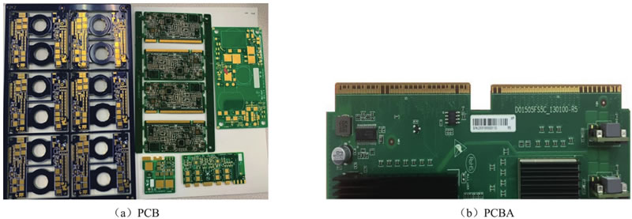
图 1 PCB与PCBA
图 1 PCB与PCBA
PCB的起源
1925 年，美国的 Charles Ducas（加成法的鼻祖）在绝缘的基板上印刷出线路图案，再以电镀的方式，成功制成导体作为配线。1936 年，奥地利人保罗·爱斯勒（Paul Eisler）（减成法的鼻祖）首先在收音机里采用了印制电路板。
1943 年，美国人将该技术运用于军用收音机。1948 年，美国正式认可此发明可用于商业用途。
自 20 世纪 50 年代中期起，印制电路板才开始被广泛运用，如今印制电路板在电子工业中已占据绝对统治地位。
印制电路板从单层发展到双面、多层和挠性，并且仍旧保持着各自的发展趋势。由于不断地向高精度、高密度和高可靠性方向发展，不断缩小体积、降低成本、提高性能，使得印制电路板在未来电子设备的发展工程中，仍然保持着强大的生命力。
国内外对未来印制电路板生产制造技术发展动向的论述基本是一致的，即向高密度、高精度、细孔径、细导线、小间距、高可靠性、多层化、高速传输、轻质量、薄型化方向发展，同时在生产方面，向提高生产率，降低成本，减少污染，适应多品种、小批量生产方向发展。
PCB的作用
在印制电路板出现之前，电子元器件之间的互连都是通过电线直接连接而组成完整线路的。电子设备采用印制电路板以后，由于同类印制电路板的一致性，从而避免了人工接线的差错。
印制电路板可以提供集成电路等各种电子元器件固定、装配的机械支撑，完成集成电路等各种电子元器件之间的布线和电气连接或电绝缘，提供所要求的电气特性，如特性阻抗等，可为自动锡焊提供阻焊图形，为元器件插装、检查、维修提供识别字符和图形。
PCB的分类
1、按用途分类
- 民用印制电路板（消费类）：玩具、照相机、电视机、音响设备、手机等使用的印制电路板。
- 工业用印制电路板（装备类）：安防、汽车、计算机、通信机、仪器仪表等使用的印制电路板。
- 军用印制电路板：航天、雷达使用的印制电路板等。
2、按基材类型分类
- 纸基印制电路板：酚醛纸基印制电路板、环氧纸基印制电路板等。
- 玻璃布基印制电路板：环氧玻璃布基印制电路板、聚四氟乙烯玻璃布基印制电路板等。
- 合成纤维印制电路板：环氧合成纤维印制电路板等。
- 有机薄膜基材印制电路板：尼龙薄膜印制电路板等。
- 陶瓷基板印制电路板。
- 金属芯基印制电路板。
3、按结构分类
按结构印制电路板可分为刚性印制电路板、柔性印制电路板和刚柔结合印制电路板，如图 2 所示。
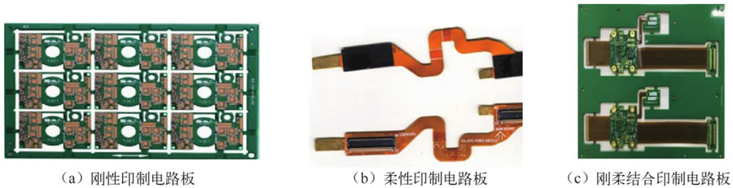
图 2 刚性、柔性及刚柔结合印制电路板
图 2 刚性、柔性及刚柔结合印制电路板
4、按层数分类
按层数印制电路板可分为单面板、双面板、多层板和 HDI 板（高密度互连板）。1) 单面板
单面板指只在电路板的其中一个面（焊接面）上进行布线，而所有元器件以及元器件标号和文字标注等都在另一个面（元器件面）上放置的电路板。单面板最大的特点是价格低廉，制造工艺简单。但是由于只能在一个面上进行布线，布线比较困难，容易出现布不通的情况，所以只适用于一些比较简单的电路。
单面板结构示意图如图 3 所示。
图 3 单面板结构示意图
2) 双面板
双面板在绝缘板两面进行布线，其中一面作为顶层，另一面作为底层。顶层和底层通过过孔进行电气连接。通常，双层板上的元器件被放置在顶层；但是，有时为了缩小电路板体积，也可以在两层都放元器件。双层板的特点是价格适中、布线容易，是目前普通电路板中比较常用的类型。
双面板结构示意图如图 4 所示。
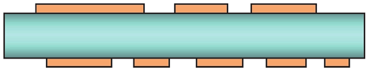
图 4 双面板结构示意图
图 4 双面板结构示意图
3) 多层板
两层以上的印制电路板统称为多层板。多层板结构示意图如图 5 所示。
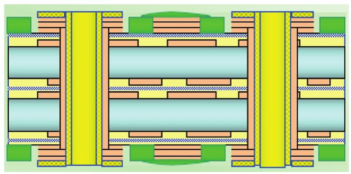
图 5 多层板结构示意图
图 5 多层板结构示意图
4) HDI板
HDI 板是采用微盲埋孔技术的一种线路分布密度比较高的电路板。HDI 板结构示意图如图 6 所示。
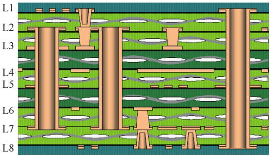
图 6 HDI板结构示意图
图 6 HDI板结构示意图
PCB的结构
PCB 主要由覆铜箔层压板（Copper Clad Laminates，CCL）、半固化片（PP片）、铜箔（Copper Foil）、阻焊层（又称阻焊膜）（Solder Mask）组成。同时，为了保护表面裸露在外的铜箔，保证焊接效果，还需要对 PCB 进行表面处理，有时还要配以字符进行标识。PCB 四层板结构示意图如图 7 所示。
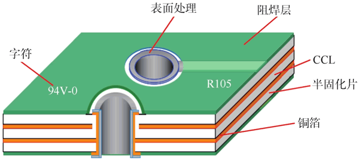
图 7 PCB四层板结构示意图
图 7 PCB四层板结构示意图
1) 覆铜箔层压板
覆铜箔层压板（CCL），简称覆铜箔板或覆铜板，是制造印制电路板的基础材料，是由介电层（树脂、玻璃纤维）及高纯度的导体（铜箔）二者所构成的复合材料。直到 1960 年才有专业制造厂以甲醛树脂铜箔为基材制作单面 PCB，并将其投入电唱机、录音机、录像机等市场，之后因双面贯孔镀铜制造技术兴起，于是耐热、尺寸安定的环氧玻璃基板大量被应用至今。现在用得比较多的有 FR4、FR1、CEM3、陶瓷板和铁氟龙板等。
目前，应用最广泛的采用蚀刻法制成的 PCB 是在覆铜箔板上有选择地进行蚀刻，得到所需的线路图形。覆铜箔板在整个印制电路板上主要提供导电、绝缘和支撑三个方面的功能。印制电路板的性能、质量和制造成本，在很大程度上取决于覆铜箔板，如图 8 所示。
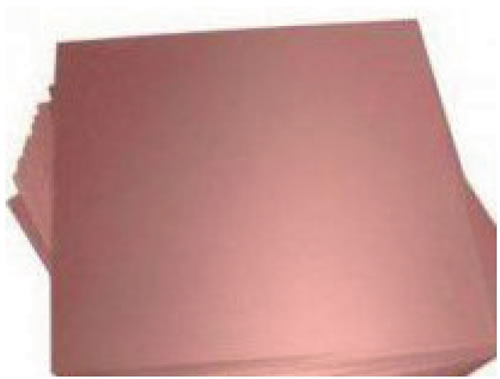
图 8 覆铜箔板
图 8 覆铜箔板
2) 半固化片
半固化片又称 PP 片，是多层板生产中的主要材料之一，主要由树脂和增强材料组成，增强材料分为玻璃纤维布（简称玻璃布）、纸基和复合材料等几种类型。制作多层印制电路板所使用的半固化片（黏结片）大多采用玻璃布作为增强材料。将经过处理的玻璃布浸渍上树脂胶液，再经热处理预烘制成的薄片材料被称为半固化片。半固化片在加热加压下会软化，冷却后会固化。
由于玻璃布在经向、纬向单位长度的纱股数不同，在剪切时需注意半固化片的经纬向，一般选取经向（玻璃布卷曲的方向）为生产板的短边方向，纬向为生产板的长边方向，以确保板面的平整，防止生产板受热后扭曲变形。
PP片如图 9 所示。
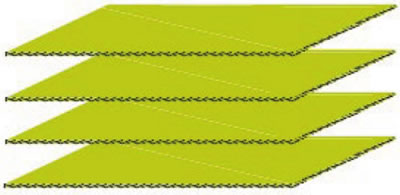
图 9 PP片
图 9 PP片
3) 铜箔
铜箔是沉淀于电路板基底层上的一层薄的、连续的金属箔，它作为 PCB 的导电体，容易被黏合在绝缘层上，经蚀刻后形成电路图样。常见工业用铜箔可分为压延铜箔（RA铜箔）与电解铜箔（ED铜箔）两大类：
- 压延铜箔具有较好的延展性等特性，是早期软板制程所使用的铜箔；
- 电解铜箔则具有制造成本较压延铜箔低的优势，如图 10 所示。
图 10 铜箔
4) 阻焊层
阻焊层是指印制电路板上有阻焊油墨的部分。阻焊油墨通常是绿色的，有少数采用红色、黑色和蓝色等，所以在 PCB 行业常把阻焊油墨称为绿油，它是印制电路板的永久性保护层，能起到防潮、防腐蚀、防霉和机械擦伤等作用，同时也可以防止零件被焊到不正确的地方。
阻焊层如图 11 所示。
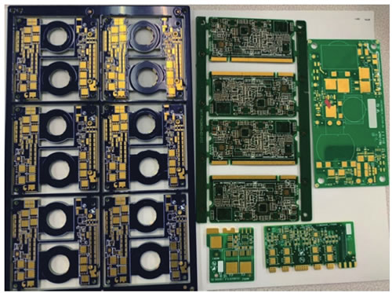
图 11 阻焊层
图 11 阻焊层
5) 表面处理
这里所说的“表面”是指 PCB 上为电子元器件或其他系统与 PCB 上的电路之间提供电气连接的连接点，如焊盘或接触式连接的连接点。裸铜本身的可焊性很好，但是暴露在空气中很容易被氧化，而且容易受到污染，所以要在裸铜的表面覆盖一层保护膜。常见的 PCB 表面处理工艺有有铅喷锡、无铅喷锡、有机涂覆（Organic Solderability Preservatives，OSP）、沉金、沉银、沉锡和镀金手指等，随着环保法规的不断完善，有铅喷锡工艺已经逐渐被禁用。
PCB 表面处理工艺如图 12 所示。
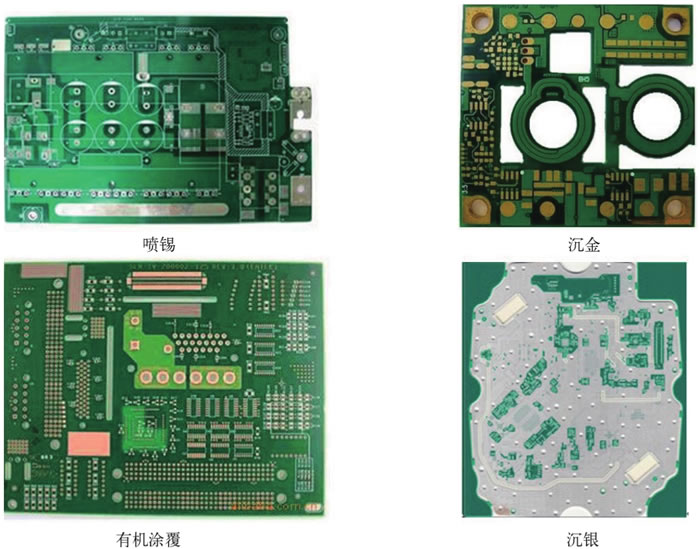
图 12 PCB表面处理工艺
图 12 PCB表面处理工艺
6) 字符
字符即文字层，在 PCB 的最上面一层，可以没有，一般用于注释。通常，为了方便电路的安装和维修等，在印制板的上下表面上印刷所需要的标志图案和文字代号等，例如，元器件标号和标称值、元器件外廓形状和厂家标志、生产日期等。
字符通常采用丝网印刷方式印刷，如图 13 所示。
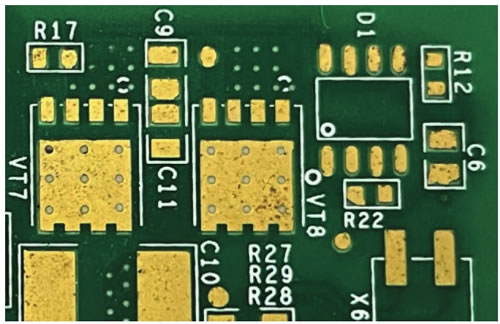
图 13 字符
图 13 字符
关注公众号「站长严长生」，在手机上阅读所有教程，随时随地都能学习。内含一款搜索神器，免费下载全网书籍和视频。

微信扫码关注公众号